Aryamaan Borgohain|
Undergrad Mathematics Major
Hey, I am Aryamaan, an undergrad math major interested in Scientific Computing, Computer Graphics, Numerical Methods, and Orbital Mechanics.
I started out self-learning through YouTube, tinkering with 3D assets and software using Unity, C#, and Blender. Today my focus has shifted mainly to making simulations of various dynamic systems and visualisations of algorithms, specifically within the domains of celestial mechanics, linear algebra, and graphics programming. I am also learning Theoretical Computer Science and exploring my interests there.
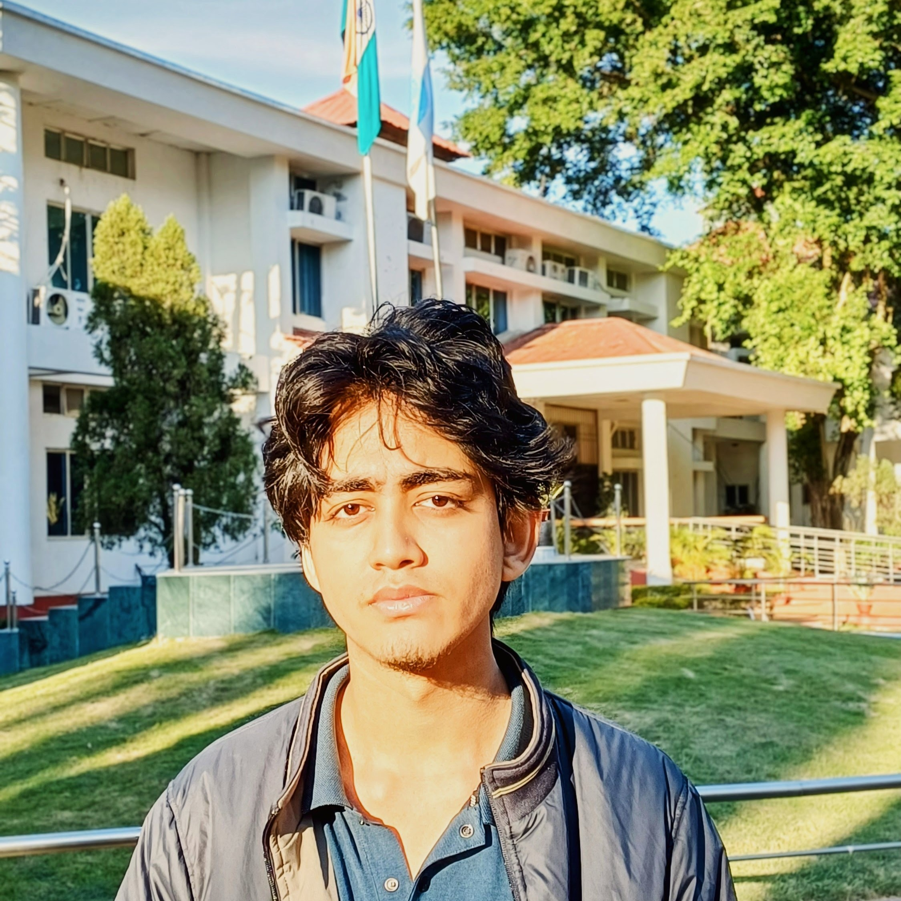
Research Interests (Elemetary!)
Education
Completed secondary and senior secondary school.
Some of my major projects
OrbitForge: Celestial Mechanics Engine NEW

A celestial mechanics and orbital math suite I built to solve boundary value problems (BVP) using the Lancaster and Blanchard method (NASA 1969).
- Physics Backend: Universal Variables and Newton-Raphson iteration on a dynamically calculated Jacobian matrix.
- Numerical Stability: Encke's Method for N-body perturbations and Symplectic Velocity-Verlet integration.
- Parallelized Pipeline: Memory-optimized C++ core feeding into a CSV for a multiprocessed Python pipeline visualization.
FIG 1. SIMULATION TELEMETRY


Computational Math Visualization
A collection of tools I built to visualize the math concepts I was learning, rather than just rote-memorizing them. It helps build a real geometric intuition for algebra and calculus.
- Surface Rendering: Z-order chunk rendering algorithm using manually calculated surface normals for accurate depth buffering.
- Performance: Python multiprocessing pipeline achieving a 10x speedup in frame sequence rendering.
- Algorithm Verification: Included an empirical O(N³) verification of Gaussian Elimination operation cost via least-squares polynomial curve fitting.
FIG 2. SURFACE NORMALS
Check out my research!
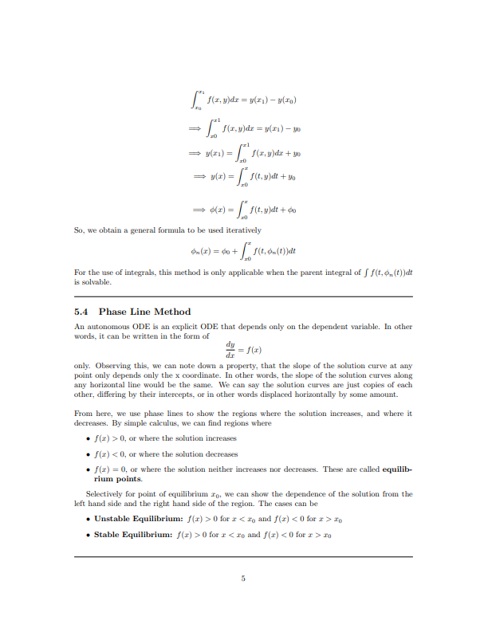
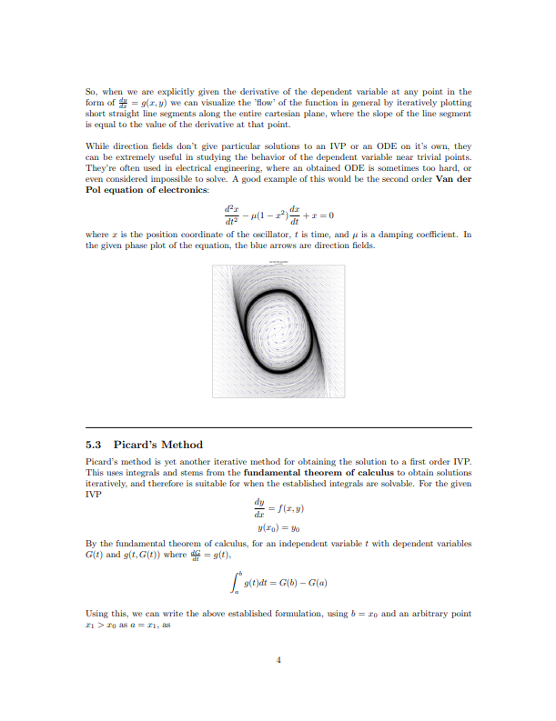
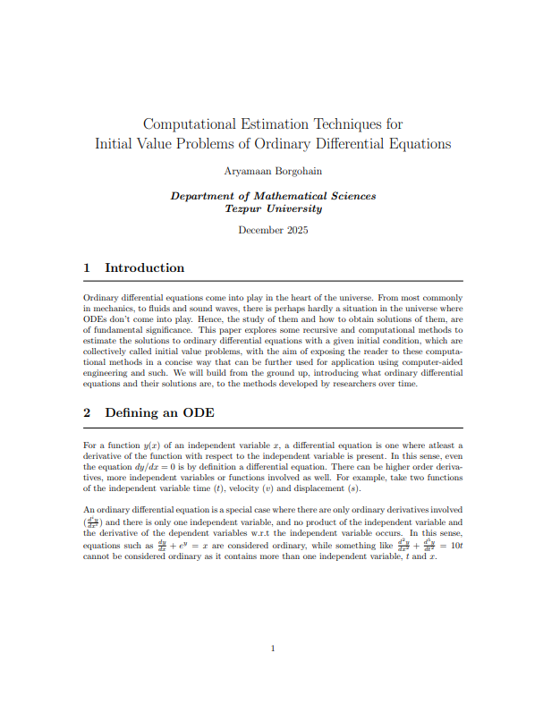
Computational Estimation of Initial Value Problems
[Unpublished Literature Review], December 2025
An elementary literature review compiling some computational estimation techniques for Initial Value Problems. I originally did this as a side project to teach myself LaTeX.
Integrates various numerical methods and visualizations ranging from RK1 to Phase Lines, Slope Fields, Taylor Series, and Picard's Method.
Read full paper [PDF]3D Environments & Technical Art
Stonehill Road Bungalow
An atmospheric 3D environment of a house in the forest, originally built for a horror game concept called Profane Locus. I spent a lot of time getting the spatial composition and volumetric lighting right.
CINEMATIC SHOWCASE
ENVIRONMENT STILLS
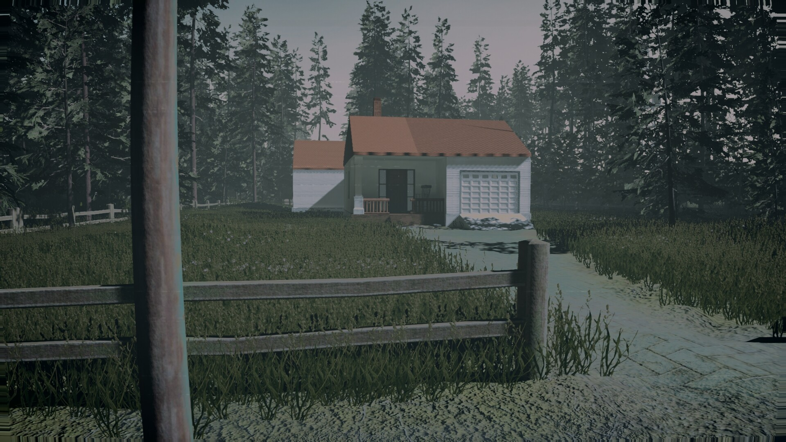
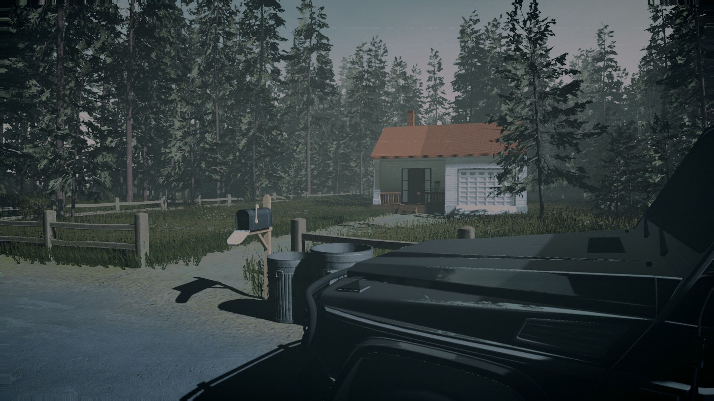
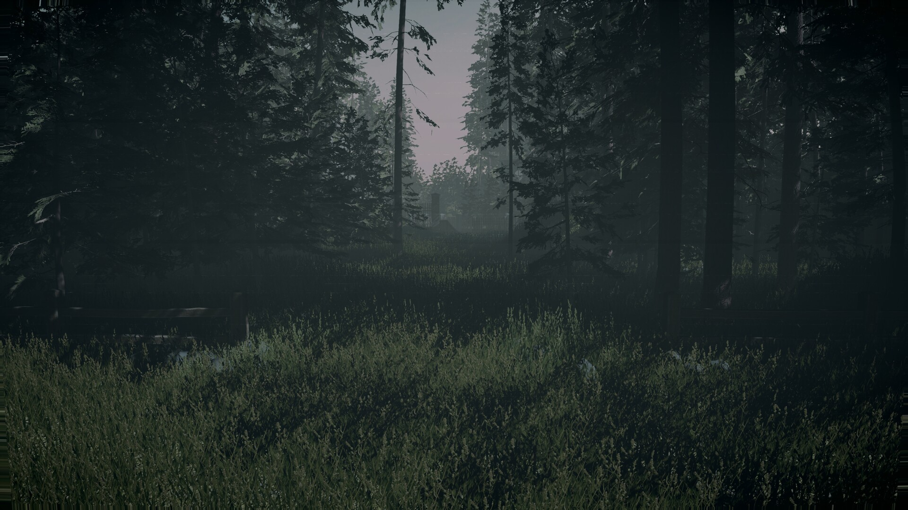
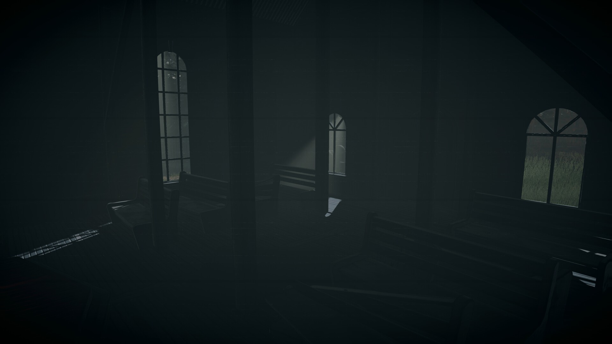
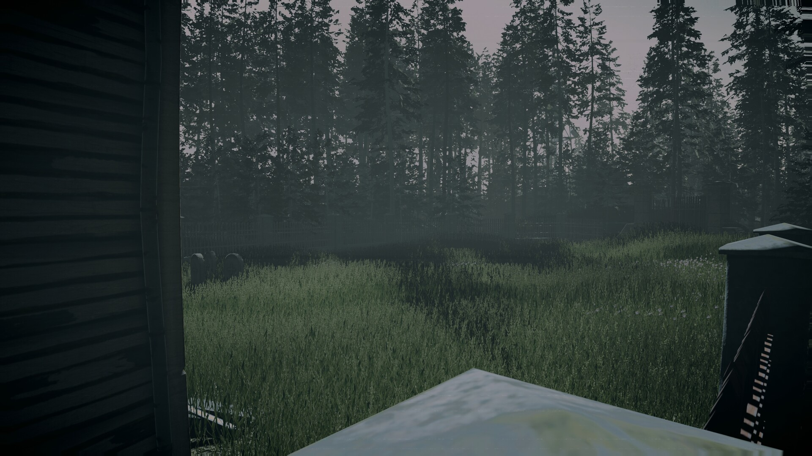
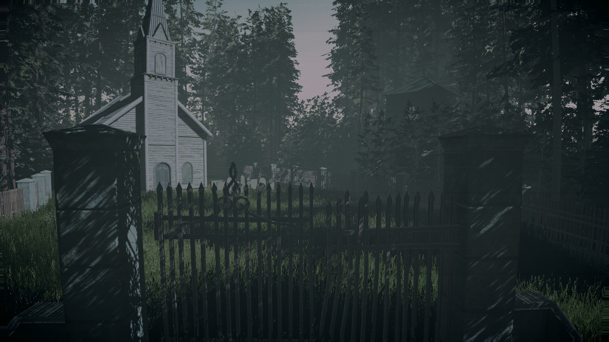
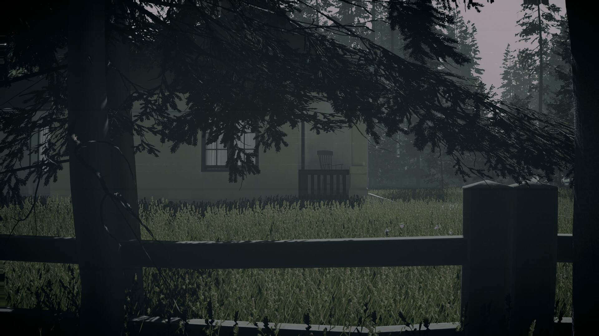
Architectural Visualization & Prop Modeling
A collection of environments and props where I focused on procedural texturing, physically based rendering (PBR), and writing custom shaders.
- Graphics Logic: Optimized Shader Graphs and C# scripts to simulate volumetric lighting effects in real-time.
- Topology: Clean topology and optimized hard-surface modeling for game engines, ensuring non-overlapping UV mapping.
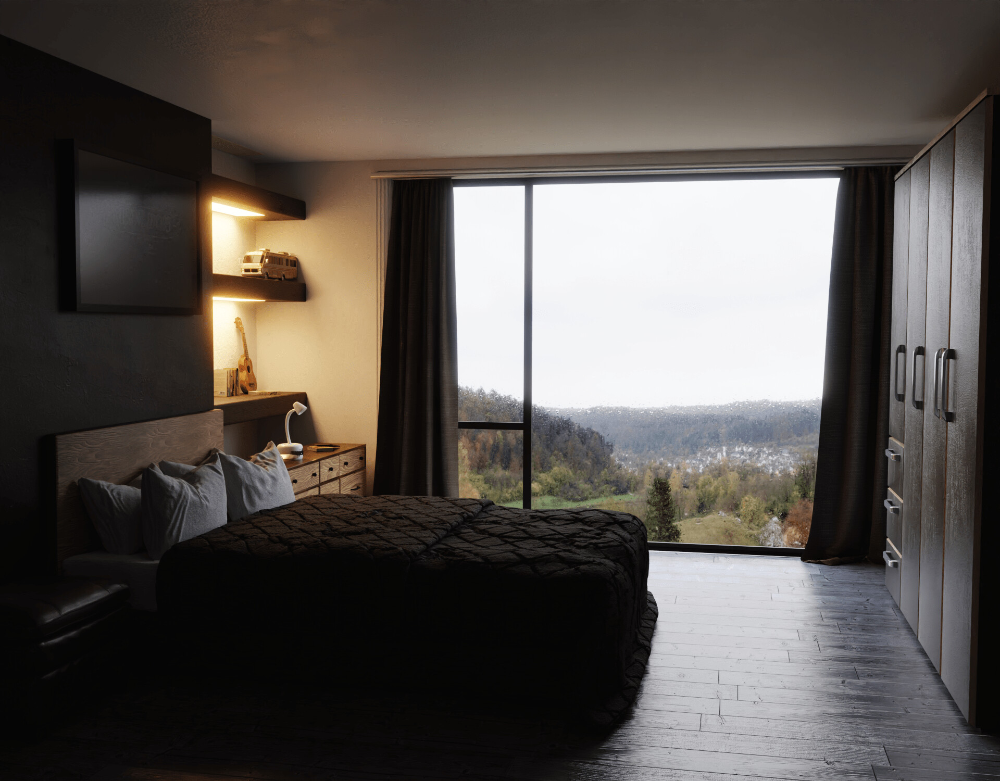

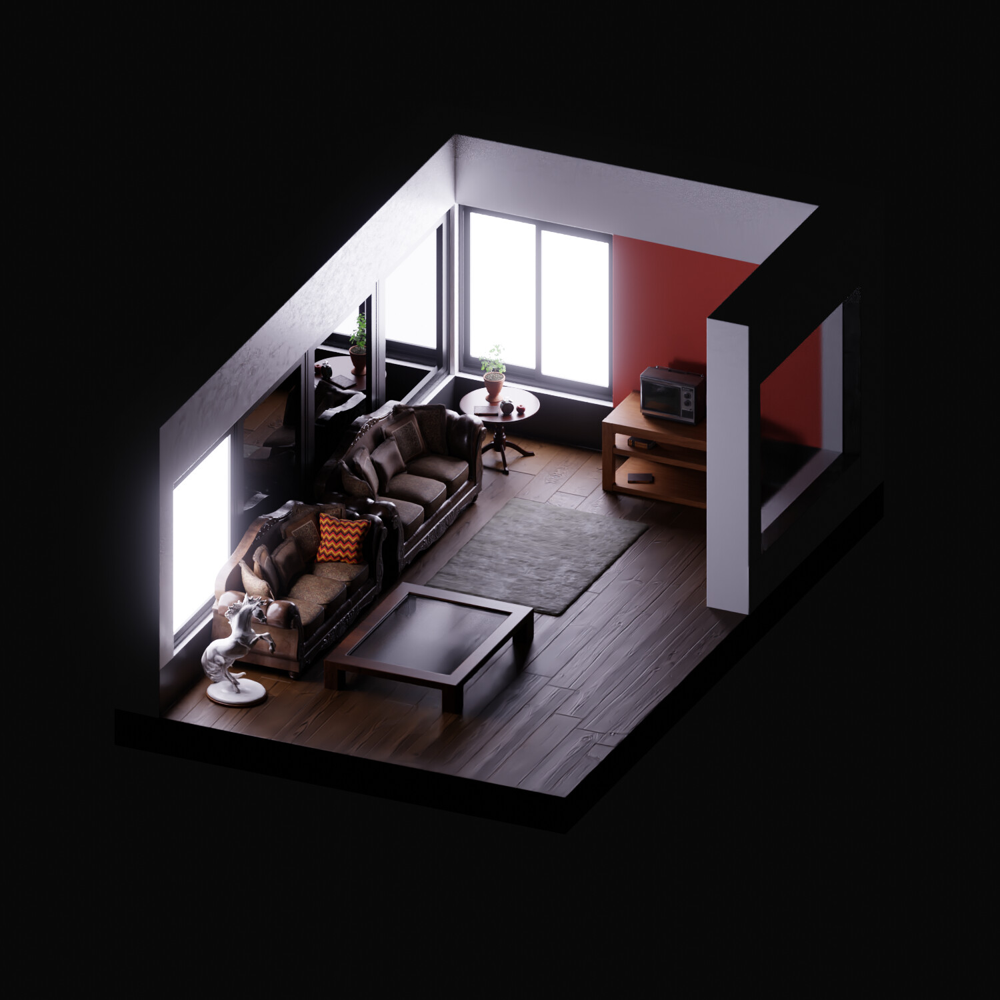
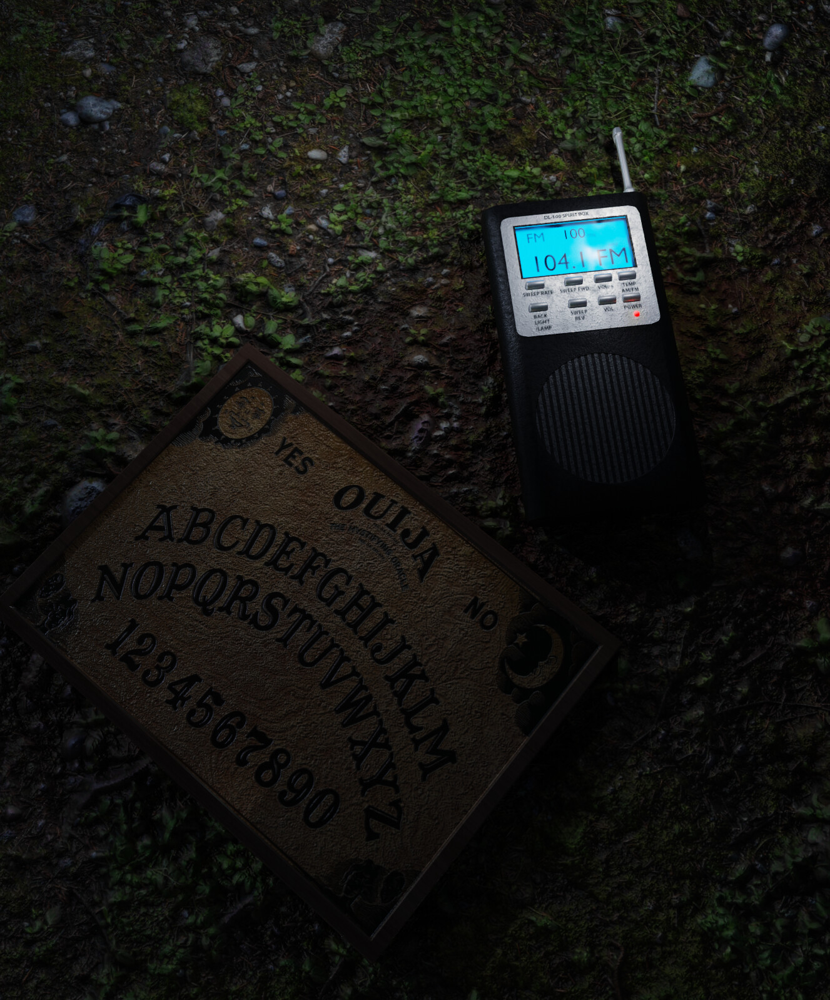
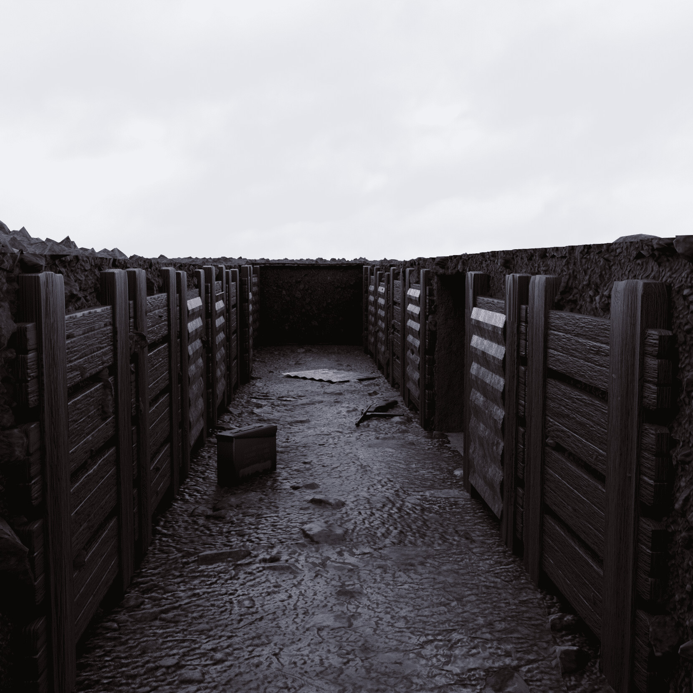
Technical Expertise
I. SYSTEMS & COMPUTING
II. GRAPHICS & ENGINES
III. MATHEMATICS
Certifications
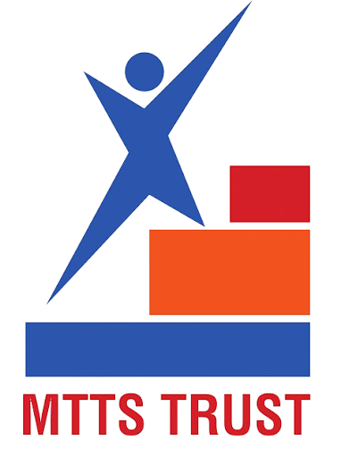
Initiation into Mathematics 2026 at Indian Institute of Technology, PatnaGet in Touch
I am up anytime for research collaborations, building simulations, games, dynamic systems, and discussions in computational mathematics, graphics architecture, linear algebra, any of my projects, anything really!